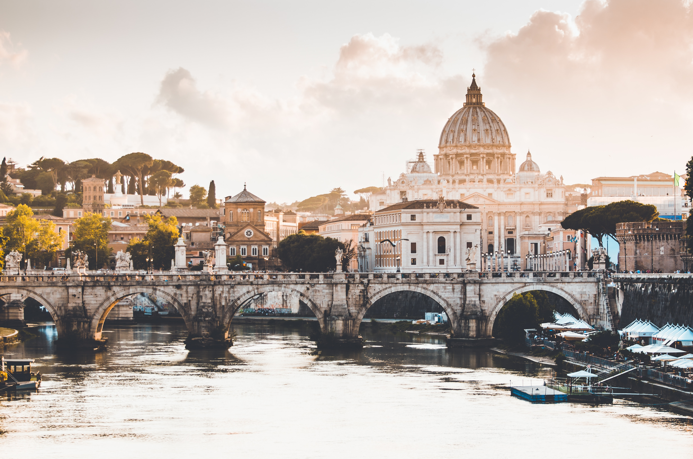
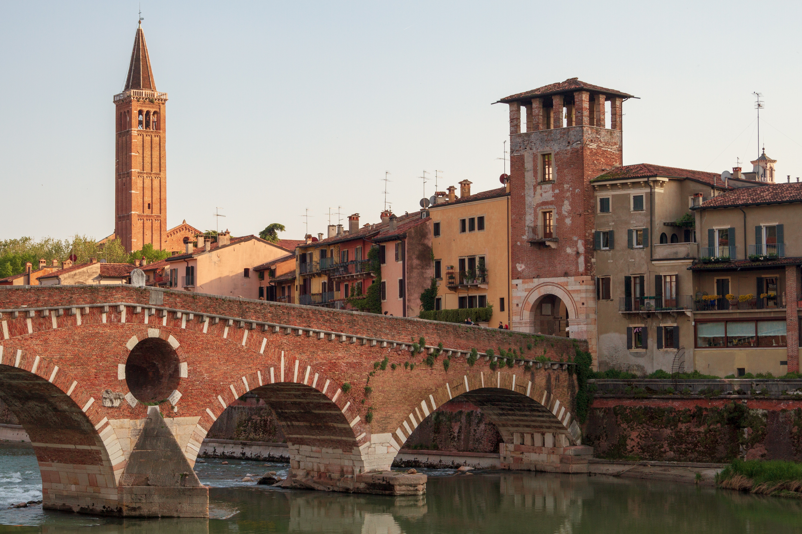

Naples
The largest city of the Campania region, Naples offers the beauty of an old seaport, close proximity to Pompeii and the volcano Vesusius, and is recognized as the birthplace of pizza.
Rome
The capital of Italy demonstrates a fascinating mix between modern Europe and the remnants of classical Roman civilization. For history and architecture lovers, Rome is a must.
Bologna

Bologna is the center of the farmland-based Emilia Romagna region. It's regarded as the food capital of Italy, and it's also home to Italian exotic car manufacturers.
Florence
Florence was one of the wealthiest European cities throughout the Renaissance and Enlightenment. Many of its universities and art pieces remain to this day.
Turin
Turin is unique among Italian cities, as its northern geography lent it French and Austrian cultural elements. It's also one of Italy's wealthies cities, with a more modern culture.
Palermo
Located on the island of Sicily, Palermo attracts tourists with its uniquely Mediterranean climate, a mix of Greek and Roman influences, and artisan clothing and food.
Pisa

Along with its famous leaning tower, Pisa hosts more classical architecture, a UNESCO-protected plaza, and a presigious 700-year-old university that is still functioning.
Positano

Positano's beauty and popularity with tourists comes from its Amalfi coast location. It has picturesque cliffside views of the turquoise sea, and vibrantly colored houses.
Siena
This Tuscan city is renowned for its narrow and cobbled streets, mountainous layout, and lavish palazzos, which have barely changed since its construction in the 1300s.
Venice

Made up of 118 islands and over 400 bridges, Venice is a city built on the sea and interconnected by canals. The only (and most scenic) way to get around is by Venetian gondolas.
Milan

Milan intermingles scenic and historical locations such as beautiful cathedrals, duomos, and plazas with contemporary fasion. Over time, Milan is becoming Italy's modern center.
Verona
One of Italy's most classical cities, Verona is known for its wines, Roman amphitheater, and riverfront. It's also the home of the world-famous balcony from Romeo and Juliet.